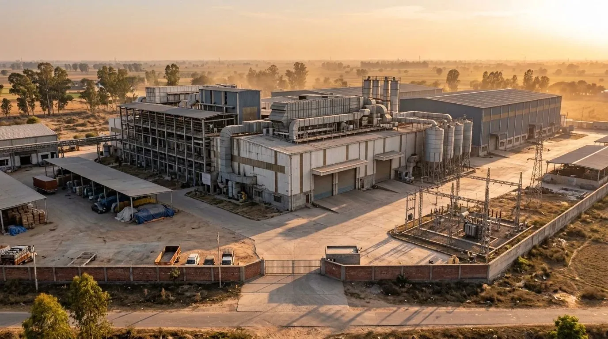

A first conversation
It starts with what is being sold or wanted: a complete mill, a unit or a single section, and whether land and building are part of it. A first conversation and initial guidance from us cost nothing.
Service 04 · Mills, Pakistan
Buying or selling a complete mill, with an experienced hand on both sides of the table.

We have traded more than 50 mills. We buy and sell complete mills and units ourselves, and we act as the middleman when a buyer and seller need someone both sides can trust.
Advice comes with it. We help owners understand what their machinery is worth, how to set up a new mill, and how to get more from the production they have.
مکمل اسپننگ ملز اور یونٹس کی خرید و فروخت، بروکریج، مشینری کی قیمت کا اندازہ اور نئی مل لگانے کا مشورہ۔ پہلی مشاورت مفت۔
How it works
Selling or buying a mill takes time. These are the stages most deals go through.
It starts with what is being sold or wanted: a complete mill, a unit or a single section, and whether land and building are part of it. A first conversation and initial guidance from us cost nothing.
Next comes a full machinery list, department by department: make, model, year, and the number of machines, spindles or rotors. Then the machinery is inspected on site for condition, upkeep and, where possible, how it runs.
A mill's value depends on the age, make and condition of its machinery, how well the line is balanced, which spares and utilities come with it, and whether it is sold as a running unit or for dismantling. A detailed valuation is part of our paid advisory work.
We buy and sell mills ourselves, and we act as the middleman when a buyer and a seller want someone both sides can trust.
Before anything is signed, both sides should be clear on exactly what is included: machinery, spare parts, and utilities such as compressors, generators and humidification. With M Tech, terms are agreed face to face and every deal is documented. The payment method is agreed per deal.
When machinery moves, it is dismantled section by section, marked, packed and loaded, then set up again. Installation and shifting are available on request. For owners setting up a new mill, our advice covers the machine mix, line balancing and layout.
A buyer who will run the mill where it stands looks at the whole set-up: power, location, building and how the line performs today. A buyer who will move the machinery looks mainly at the machines and the cost of shifting them. Knowing which kind of buyer you are dealing with shapes both the price and the timeline.
A mill's running cost depends on more than its machinery. Power supply and generators, compressors, humidification and air conditioning, and the state of the building should all be checked alongside the machines, because they affect both the price and what it will cost to run.
Both. We buy and sell complete mills and units ourselves, and we also work as the middleman between a buyer and a seller.
Yes. Along with complete mills we deal in units and sections, and in single machines through our machinery service.
Yes. Machinery valuation is part of our advisory work. The first consultation is free; for detailed advice, please contact us.
Yes. New mill setup advice covers the machine mix, line balancing and layout, and planning for the production you want.
Industrial cities all over Pakistan, including Karachi, Hyderabad, Nooriabad, Lahore, Faisalabad, Multan, Sheikhupura and Mirpur.
Call or WhatsApp 0332-4681423 with the location of the mill and a short description of what you want to sell or buy, and we will arrange a meeting.
Tell us what you need. We answer on call and WhatsApp, and godown visits are by appointment.